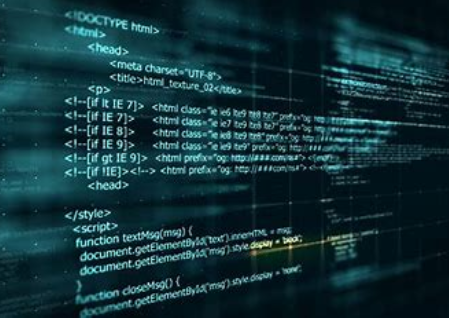

Programming language evolution continues, and more programming paradigms are used in production.Some of the trends have included:Increasing support for functional programming in mainstream languages used commercially, including purely functional programming for making code easier to reason about and to parallelize at both micro- and macro- levels Constructs to support concurrent and distributed programming.Mechanisms for adding security and reliability verification to the language: extended static checking, dependent typing, information flow control, static thread safety. Alternative mechanisms for composability and modularity: mixins, traits, typeclasses, delegates, aspects. Component-oriented software development. More interest in visual programming languages like Scratch, LabVIEW, and PWCTMetaprogramming, reflective programming (reflection), or access to the abstract syntax tree Aspect-oriented programming (AOP) allowing developers to insert code in another module or class at "join points"Domain-specific languages and code generationXML for graphical interface (XUL, Extensible Application Markup Language (XAML))
 back to main manu